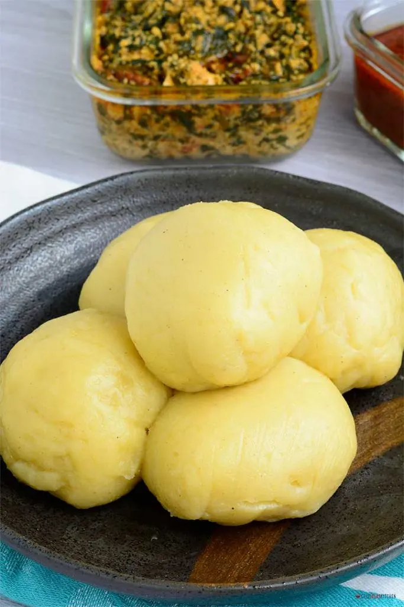

Fufu

Description
Fufu is made using cassava and plantain. You first peel both and boil them. After that,
you start by pounding the cassava and then add the plantain to it.
Ingredients
Steps
- Boil cassave and plantain.
- Let both sit out for about 5 minutes to cool down.
- Pound a few of the cassava (About 5 of them).
- Now add the same amount of plantain to it.